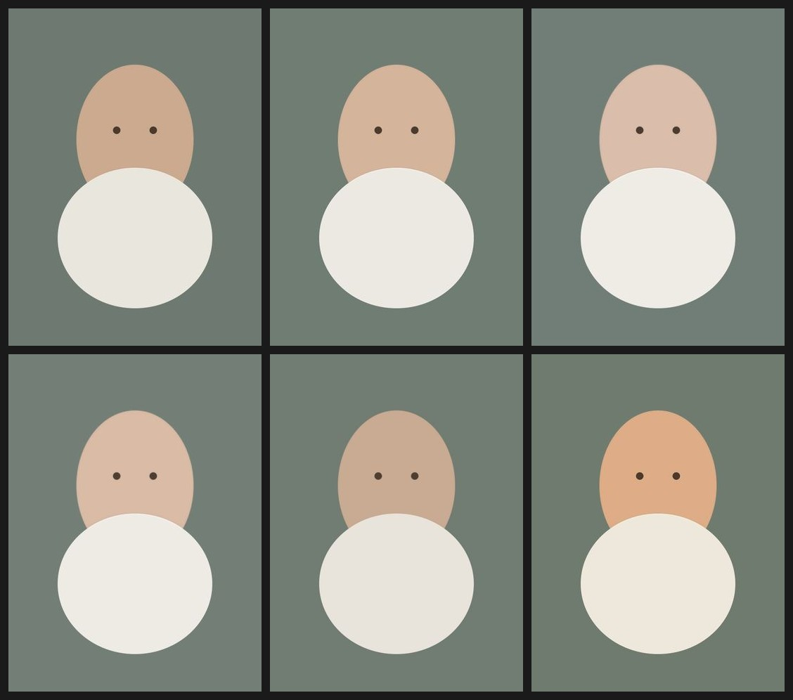

这两件事必须分开做。修图是色彩工程，可以用确定性算法做到零失真、百毫秒、可量化验收； 文案是内容运营，价值在于"选"而不是"生成"。把它们塞进同一套模板体系是错的， 但可以用同一条用户路径串起来：修好图 → 选一句话 → 自动套版式 → 审图。
把"变白变美"拆成三件事，越往前越确定、越往后越有风险：
| 层级 | 做什么 | 实现 | 风险 |
|---|---|---|---|
| 色彩 默认开 | 变白、通透、降黄、氛围调 | sharp 本地，百毫秒 | 零失真 |
| 质感 默认开 | 轻磨皮、补锐、颗粒 | median / blur / sharpen | 低 |
| AI 精修 默认关 | 五官微调、发丝、光影重塑 | 图生图 edits | 身份漂移 |
AI 档必须配闸门：输出前跑
facesim ≥ 0.85，低于阈值直接判失败、回退到色彩档结果。用户宁可少一点效果，也不能收到一张"不像自己"的照片。
这部分是本次最有价值的东西——不是"设计了几套参数"，而是参数被实测证伪了三次，最后才定下来。
做法是"提蓝通道 = 降黄"，看起来对。但蓝增益同时在提亮，和 brightness 叠加后，浅色衣物成片爆掉：
B2 冷白皮把 19.75% 的像素推到纯白。这不是参数没调好，是模型错了——色温和亮度耦合在一起，没法独立调。
改法是"色温用亮度中性的三通道矩阵，提亮用 gamma 保护高光"。理论完美，实测：
| 传入 gamma | 肤色区亮度 | 变化 |
|---|---|---|
| 2.2 | 171.3 | −0.6% |
| 2.0 | 171.3 | −0.6% |
| 1.8 | 171.3 | −0.6% |
| 1.6 | 171.3 | −0.6% |
| 1.4 | 171.3 | −0.6% |
输出像素完全一致。原因：sharp.gamma() 对已解码的 sRGB JPEG 不生效，只对 raw / 未标定输入有意义。当时六个预设看起来有亮度差异，其实全部来自 tone 和 contrast，冷白皮只有 +2.8%，根本撑不起"显白最明显"的标签。
换成 modulate({ brightness })，它的行为是线性的、可标定的：
| brightness | 肤色区提亮 | 高光溢出 |
|---|---|---|
| 1.04 | +4.6% | 0% |
| 1.06 | +6.9% | 0% |
| 1.08 | +9.2% | 0% |
| 1.10 | +10.9% | 0.23% |
| 1.12 | +13.2% | 0.48% |
规律：每 +0.01 ≈ 肤色区亮度 +2.3%。这条曲线让参数从"试出来的"变成"算出来的"。
但 brightest 抬到 1.095 时，白衣服又爆了。于是加肤色蒙版：全局先算出目标图，再用蒙版只把肤色区贴回去。两种模式的实测对比：
| 预设 | 全局 Δ肤色 | 全局溢出 | 蒙版 Δ肤色 | 蒙版溢出 |
|---|---|---|---|---|
| B0 自然光 | +2.8% | 0% | +2.7% | 0% |
| B1 通透感 | +8.4% | 0.3% | +8.2% | 0% |
| B2 冷白皮 | +13.5% | 19.72% | +13.4% | 0% |
| B3 奶油肌 | +12.5% | 19.68% | +12.4% | 0% |
| B4 胶片感 | +2.8% | 0% | +2.8% | 0% |
| B5 日落暖 | +6.1% | 0% | +6.0% | 0% |
效果几乎没损失（13.5% → 13.4%），溢出直接归零。18 组参数的超标数从 6 组降到 0 组。

上排 B0 自然光 / B1 通透感 / B2 冷白皮 下排 B3 奶油肌 / B4 胶片感 / B5 日落暖。肤色区（上椭圆）逐档变冷变亮，白衣服（下椭圆）在蒙版模式下始终保住原色。
实现上有个坑必须写下来：蒙版必须写成 RGBA。
blend: 'dest-in'读的是 alpha 通道，单通道灰度 PNG 的 alpha 恒为 1，合成出来等于没遮罩——我第一版就是这么错的，数据上表现为"蒙版模式和全局模式结果一模一样"。
还有个产品级细节：只修脸会让"脸白了身子还黄"，画面割裂。所以蒙版的 alpha 不是 0/255，而是肤色区 255、非肤色区 76（30% 弱补偿），羽化 4px。加了这层弱补偿后溢出仍是 0%。
| 预设 | 给人看的一句话 | 适合 | Δ肤色 | Δ色温 | 强度 |
|---|---|---|---|---|---|
| B0 自然光 | 几乎看不出修过 | 日常 / 证件照 | +2.7% | −2.1 | 1.015 |
| B1 通透感 | 不白，但干净 | 室内 / 阴天 | +8.2% | −6.0 | 1.045 |
| B2 冷白皮 主推 | 显白最明显 | 自拍 / 黄皮 | +13.4% | −15.8 | 1.095 |
| B3 奶油肌 | 柔、软、有光泽 | 人像 / 母婴 | +12.4% | −11.1 | 1.080 |
| B4 胶片感 | 不显白，但显贵 | 街拍 / 旅拍 | +2.8% | −9.0 | 0.980 |
| B5 日落暖 | 反向操作，加暖 | 旅拍 / 傍晚 | +6.0% | +23.6 | 1.020 |
三档强度（light / standard / strong）只调 brightness 与色温，不碰其他参数——这样"再亮一点"是可预期的一小步，不会突然换风格。
交互红线（写进 JSON 的 neverDo）：不给用户看 brightness / tone / saturation 这类参数名；不做「美白强度 0–100」滑块；不在未选预设时默认套最重档。滑块会让人误以为要懂参数，是这类功能最大的流失点。
你要的"把旅行、心情、爱情的语句整理成模板，用户直接选"，这个方向是对的。五个理由：
一级 主题 决定配色，二级 语气 决定版式。12 种组合，覆盖绝大多数分享场景。
| 主题 | 配色 |
|---|---|
| 旅行 | P5 莫兰迪 |
| 心情 | P4 深蓝 |
| 爱情 | P3 奶油 |
语气：清冷（T6 场景）/ 治愈（T2 上字下图）/ 叙事（T2）/ 松弛（T1 大字报）
| 字段 | 约束 | 为什么 |
|---|---|---|
main | 4–9 字，超 9 字保存直接报错 | 超过 9 字在 3:4 封面必然折三行，视觉重心散掉；不允许用折行兜底 |
sub | ≤ 16 字 | 副句进 subtitle 槽，2 行以内 |
已校验：48 条全部达标，同主题内 main 字符相似度 > 0.5 的近义句 0 条。
theme / tone / main / sub，配色和版式由 12 组 outfitMatrix 自动决定，不用逐条配status=offline 软删除，已有作品引用仍能正常渲染关键点：用户全程不做设计决策，只做三次点选。版式和配色由"文案的主题 + 语气"自动带出来，这是文案库必须带 theme / tone 字段的原因——它不只是分类，是排版指令。
// 一次选择，链路自动串起来 const item = copyLibrary.pick(theme='travel', tone='clear'); const outfit = copyLibrary.outfitMatrix[`${theme}.${tone}`]; // → { templateId: 'T6-scene-overlay', paletteId: 'P5-morandi' } const photo = beauty.apply(presetId='B2-cool-white', level='standard'); canvas.render({ photo, template: outfit.templateId, palette: outfit.paletteId, slots: { title: item.main, subtitle: item.sub } });
上一版 16 条规则管的是"分享图长得好不好看"。加了修图和文案库后，要补两组：
| 规则 | 组 | 判定 | 不过时说什么 |
|---|---|---|---|
| R1 | 修图自然度 | 修图前后肤色区 ΔL ≤ +18%，且 Δ(R−B) 在 −25~0 之间 | 修过头了，皮肤会显假 |
| R2 | 修图自然度 | 高光溢出 ≤ 2%，且白区纹理方差不低于原图 60% | 白衣服已经糊成一块，换轻一档 |
| R3 | 修图自然度 | 背景与肤色色温差 ≤ 8 个单位（防"脸白身子黄"） | 脸和脖子不是一个色，把背景补偿加上 |
| R4 | 修图自然度 | AI 精修档 facesim ≥ 0.85 | 这张不太像你本人，建议退回色彩档 |
| W3 | 文案库 | 所用文案在当前 theme/tone 下 status=online，且未超过 maxChars | （内部校验，不面向用户） |
| W4 | 文案库 | 文案主句与账号近 5 篇的主句相似度 ≤ 0.7 | 这句你最近用过了，换一句 |
R3 是这次实测直接催生的规则。只修脸不修背景，肤色和背景的 R−B 差会拉开，中景/半身照尤其明显——这条规则不设的话，用户自己看不出问题但会觉得"怪"。
| 阶段 | 做什么 | 验收 |
|---|---|---|
| P0 3 天 | B1/B2 两个预设上线（色彩 + 蒙版），文案库先上"旅行 + 心情"32 条 | 50 张真实自拍盲测，B2 被选中率 > 40%，"不像我"投诉 < 5% |
| P1 2 周 | 六预设齐备；文案扩到 48 条 + 运营后台；套版式打通 | 用户平均点选次数 ≤ 3，从选图到出图 < 15 秒 |
| P2 +3 周 | R1–R4 审图上线；按发布后数据反哺预设排序 | 修图类投诉下降 50%，B2 与 B1 的 CTR 差异可解释 |
三个需要你拍板的：
1. 修图默认停在哪个预设？建议 B1 通透感（最安全），B2 冷白皮做成"推荐"角标引导。默认 B2 会让"不像我"的风险前置。
2. 文案要不要允许用户改？建议允许改字，但改完仍走 maxChars 校验，否则模板会被撑破。不允许改的话复用率会掉。
3. AI 精修档开不开？建议先不开。它是唯一的身份漂移来源，等 facesim 闸门在真实样本上验证过再放。